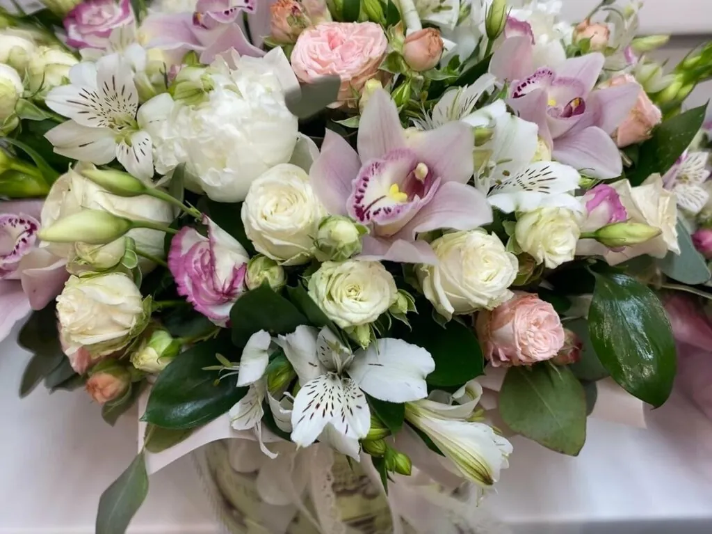
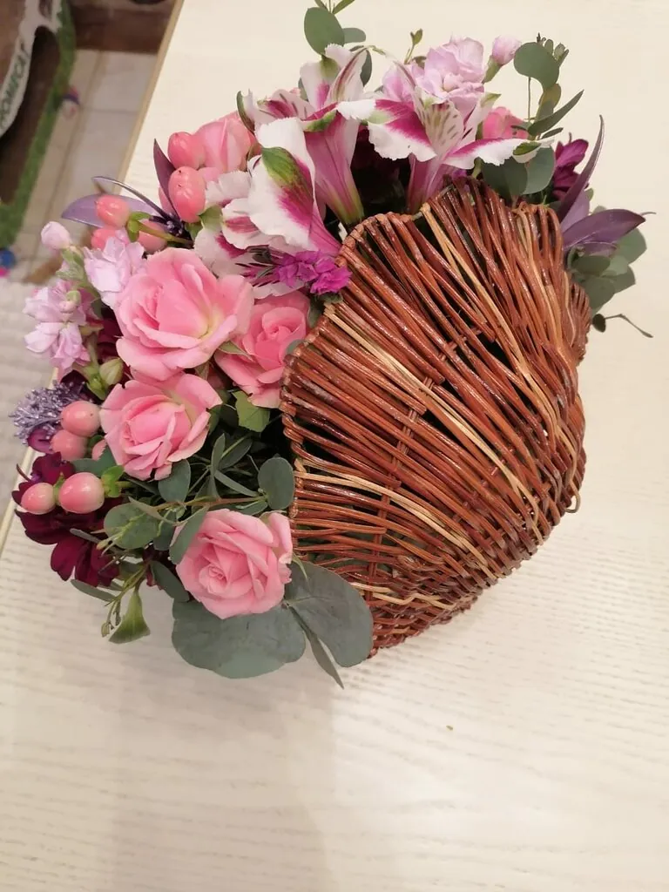
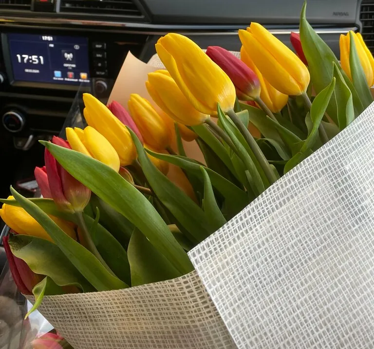
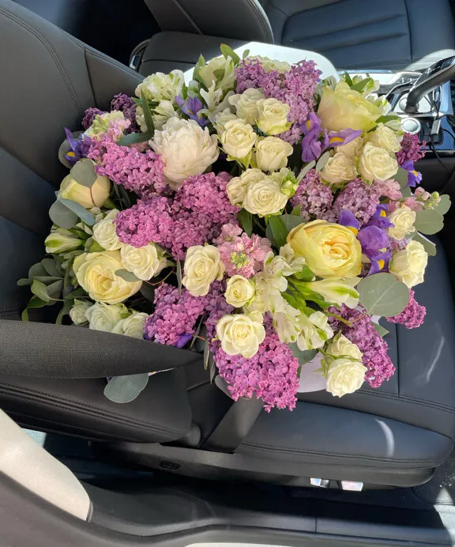
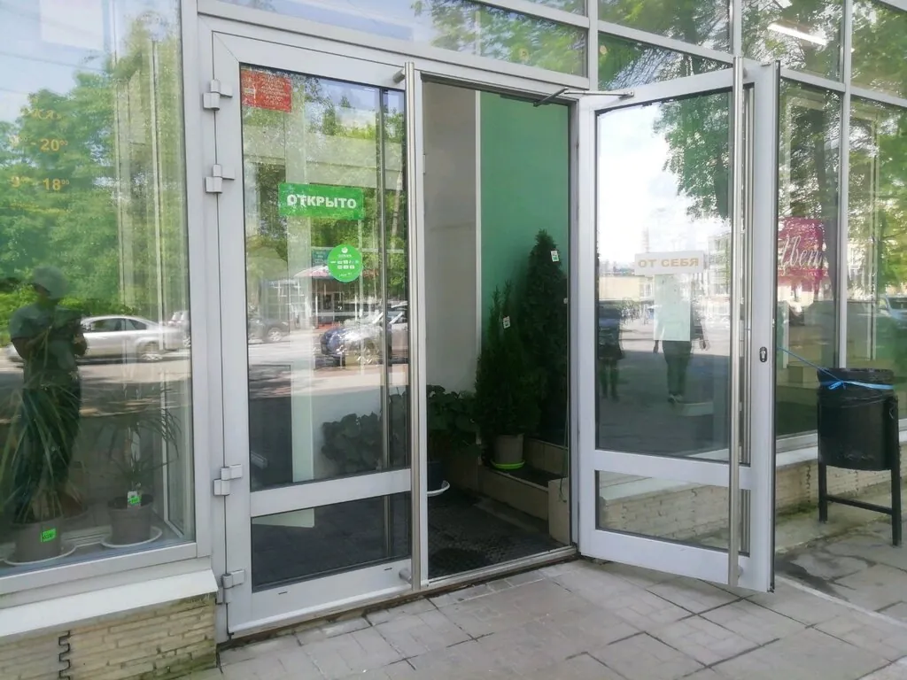
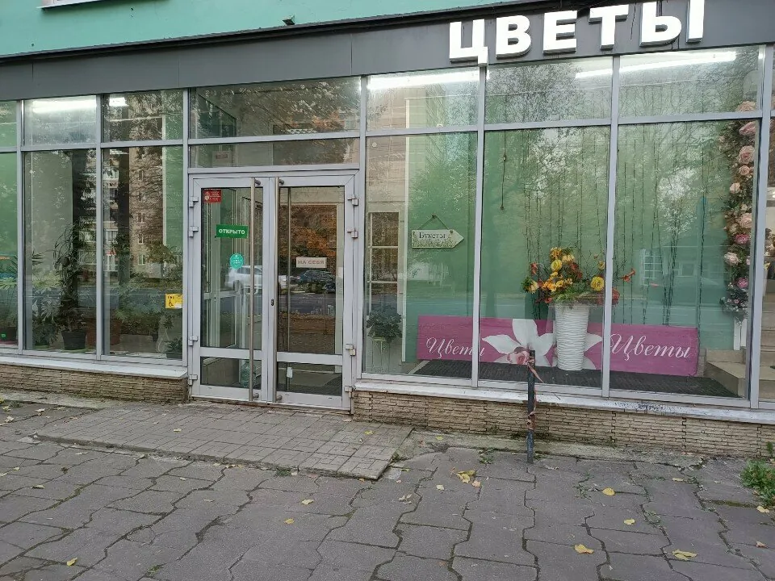
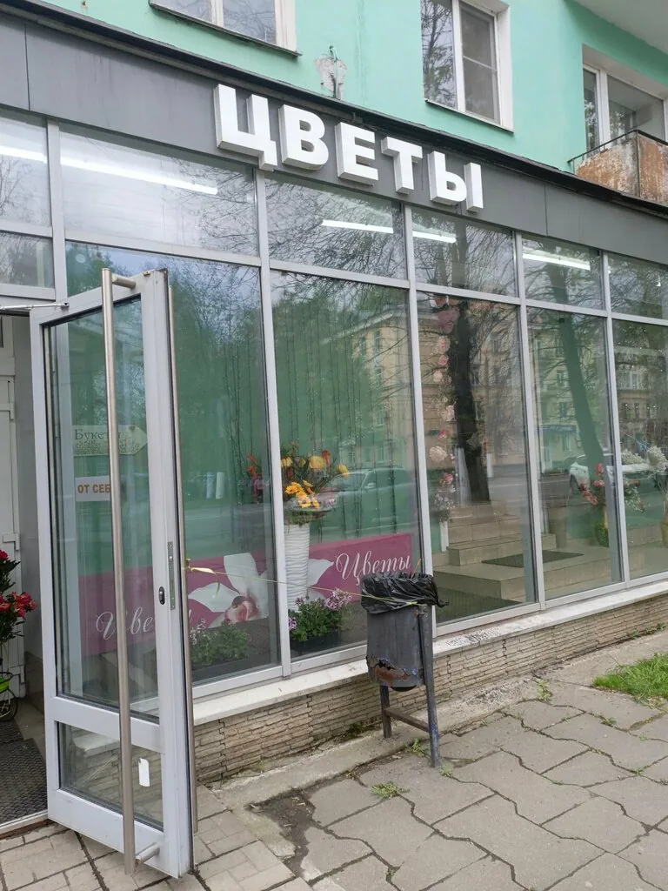
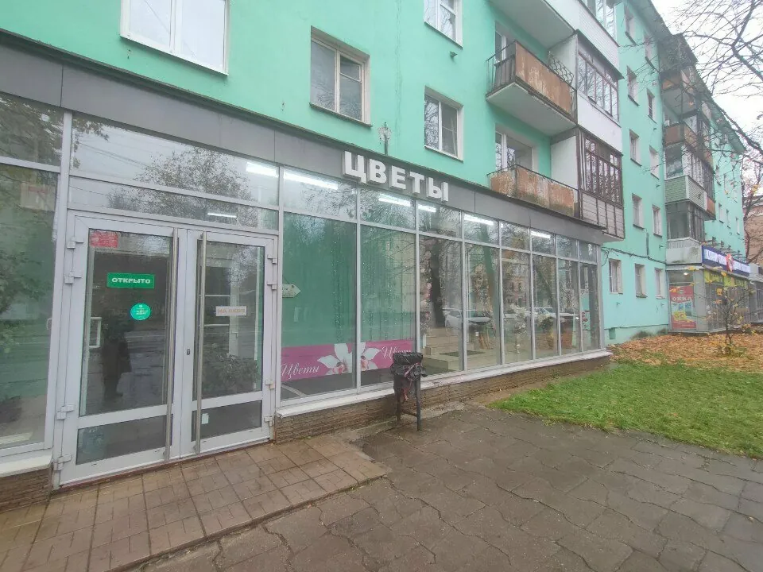
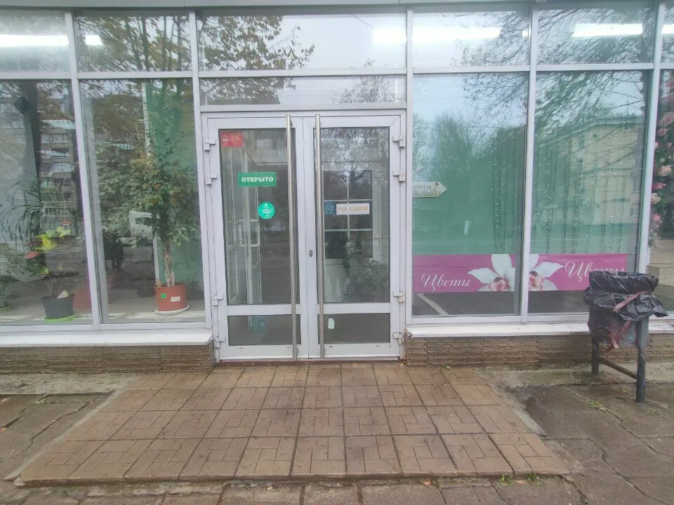
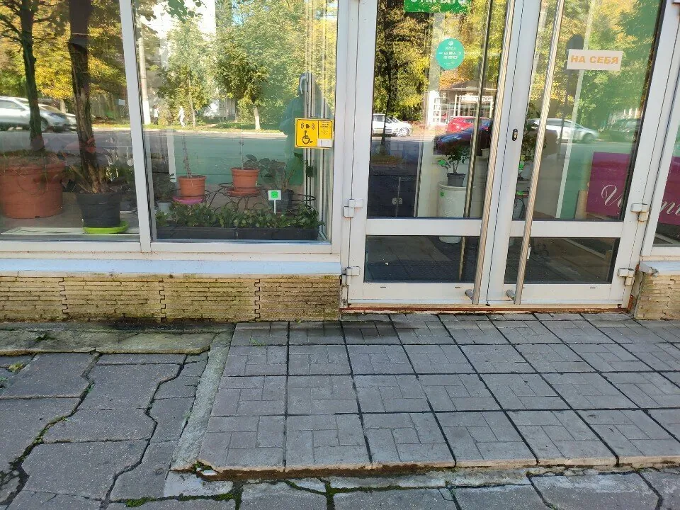

Букет при вас
Ни один букет с витрины не подошёл – флорист соберёт новый, пока вы ждёте.
Флористы мгновенно среагировали и собрали чудесный букет.Елена К., отзыв покупателя
4,3 Салон цветов и растений · Тверь, ул. Горького, 35
Не нашли букет на витрине – соберут при вас
Зайдите на Горького, 35: готовые букеты стоят на витрине, а если ни один не подошёл, флорист соберёт новый под ваш повод. Здесь же – растения в горшках и всё, чтобы за ними ухаживать.




Почему к нам заходят
Что рассказывают покупатели в отзывах на Яндекс Картах.

Ни один букет с витрины не подошёл – флорист соберёт новый, пока вы ждёте.
Флористы мгновенно среагировали и собрали чудесный букет.Елена К., отзыв покупателя
Готовые букеты на витрине, композиции, а ещё, как пишут покупатели, редкие цветы.
Очень редкие цветы можно тут найти.Виталий Маткурбанов, отзыв покупателя
Цветы в горшках, разные виды грунта и удобрения – всё в одном месте.
много всяких растений и удобренийYaroslav M., отзыв покупателя
Флорист поможет выбрать цветы к поводу и подскажет по растениям.
Спасибо огромное за Вашу работу и советы!Ольга Болгова, отзыв покупателя
Салон на Горького, 35, рядом есть где оставить машину. В будни открываемся в 8 утра.
Есть парковка.Виталий Маткурбанов, отзыв покупателя
Самый лучший цветочный магазин за Волгой.
Виталий Маткурбанов, отзыв на Яндекс Картах
Букеты
Снимки из карточки салона на Яндекс Картах. Нажмите на фото, чтобы рассмотреть.

Как нас найти
Улица Горького, 35. Ищите длинную стеклянную витрину на первом этаже.



Отзывы
Уже не первый раз покупаю тут букеты для близких. Всегда довольна всем: свежесть цветов, сервис, вкус флористов. Все на высшем уровне. Приезжала за букетом на ДР мамы, не смогла выбрать нужный на витрине. Флористы мгновенно среагировали и собрали чудесный букет. Желаю процветания и много клиентов)
Самый лучший цветочный магазин за Волгой. Есть парковка. Флорист супер, букетов много и не колхоз. Очень редкие цветы можно тут найти.
Очень довольна обслуживанием консультанта Лариса! Редко встречаются сейчас флористы со вкусом и талантом!Спасибо огромное за Вашу работу и советы! К Вам всегда приятно зайти, всё всегда на высшем уровне ❤️
Была там первый раз, очень понравился, есть выбор цветов в горшках, разновидности грунта, вежливый персонал, советую
Хороший магазин, цены приемлемые, большой ассортимент, много всяких растений и удобрений, а также хорошие продавцы, качественные растения. Всем советую этот магазин
Прекрасный салон! Прекрасные флористы! Быстро собрали букет из свежайших тюльпанчиков 😍
Всегда тут покупаю цветы, хороший выбор цветов, и стоят долго. Уважаемая организация, сделайте у себя доставку цветов.
Флористический салон
Напишите ВКонтакте или позвоните: +7 (915) 706-42-27.
Как найти
Тверь, ул. Горького, 35. Пн–пт 8:00–20:00, сб–вс 9:00–18:00. Второй телефон: +7 (900) 019-22-29.

Оставьте телефон – флорист перезвонит, спросит о поводе, цветах и бюджете.